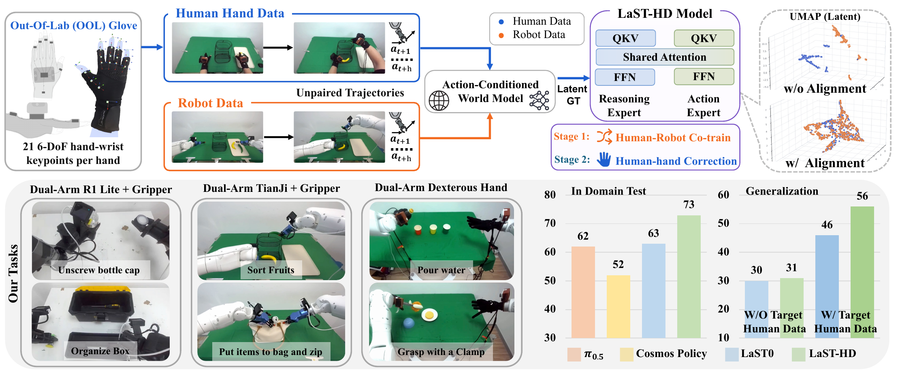
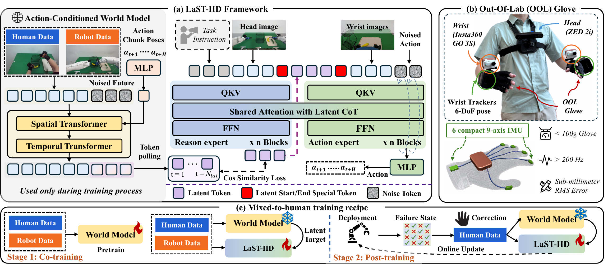
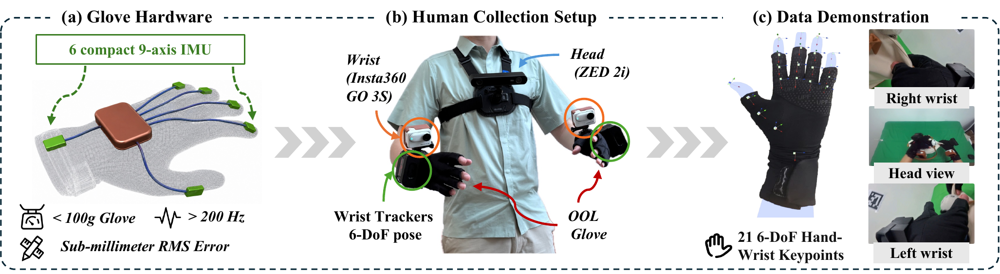
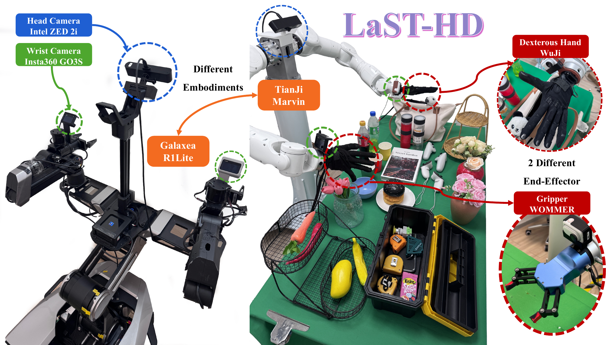
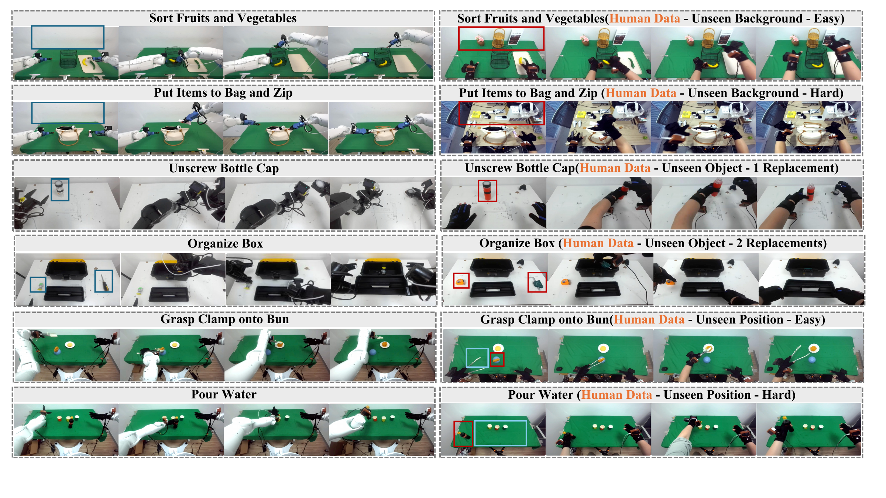
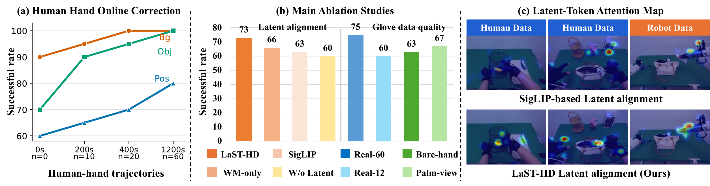
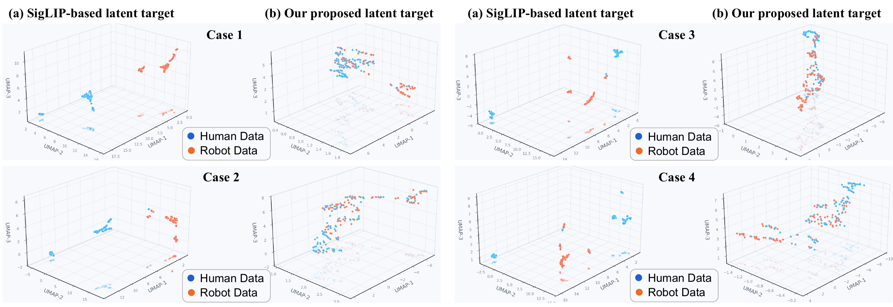
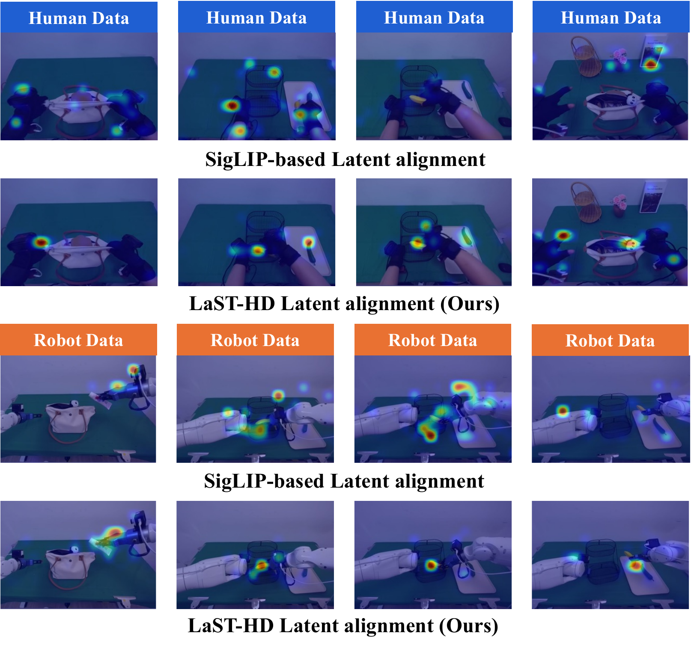
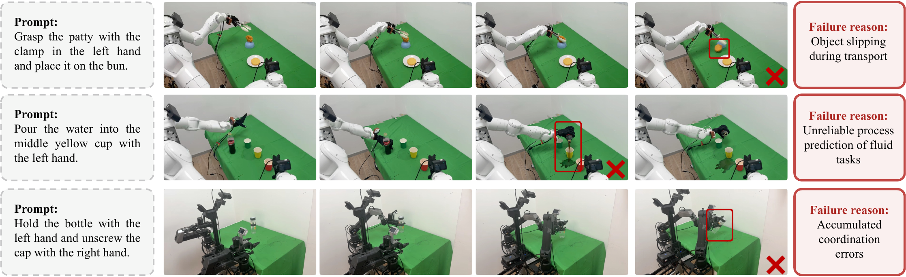

Project Page
Learning Latent Physical Reasoning from Human Data for Robot Manipulation
1 State Key Laboratory of Multimedia Information Processing, School of Computer Science, Peking University
2 The Chinese University of Hong Kong
3 Simplexity Robotics
4 Aether Tech
LaST-HD transfers scalable human-hand demonstrations into robot action learning by aligning human and robot trajectories inside a shared latent physical reasoning space — pairing an action-conditioned world model with OOL Glove data collection and a progressive mixed-to-human training recipe.

Videos
Paired robot-human data and final deployment rollouts.
In-domain robot demonstrations are paired with corresponding OOL Glove human data, followed by final policy rollouts under the same evaluation scenarios.
Paired data examples
Top row: robot demonstrations. Bottom row: matching OOL Glove human demonstrations.
Task 01
Sort Fruits
Task 02
Put Items to Bag and Zip
Task 03
Unscrew Bottle Cap
Task 04
Organize Box
Task 05
Grasp Clamp onto Bun
Task 06
Pour Water
Robot data
In-domain
Human data
Matched OOL Glove
Final test rollouts
Policy executions under the final evaluation settings.
Overview
Human-hand demonstrations become robot-ready physical supervision.
Rather than directly imitating human kinematics, LaST-HD supervises a reasoning-before-acting VLA with world-model latents that capture predicted physical consequences across embodiments.
6
real-world tasks
3
robot embodiments
21
hand-wrist keypoints
20min
for 60 OOL corrections
01
Latent human-to-robot alignment
An action-conditioned world model maps unpaired human-hand and robot demonstrations into a shared physical reasoning space before action generation.
02
Out-of-Lab data collection
OOL Glove records native human-hand interactions with lightweight IMU-based tracking, enabling efficient retargetable supervision for grippers and dexterous hands.
03
Mixed-to-human training
Mixed human-robot co-training is followed by human-hand online correction, giving LaST-HD a practical path from scalable human data to deployment adaptation.
Method
A reasoning-before-acting VLA aligned by predicted physical consequences.
LaST-HD keeps the world model as a training-time alignment bridge. Its denoised future-frame features supervise compact latent reasoning tokens, which then condition the action expert through shared attention.

Action-conditioned world model
Human and robot trajectories are not required to be paired. Action chunks act as weak anchors while the world model predicts shared physical consequences.
Latent reasoning supervision
Deep U-Net features from generated future frames are projected and pooled into latent targets for the LaST-HD reasoning expert.
Action generation
The action expert predicts robot action chunks through flow matching, conditioned on language, vision, and the aligned latent reasoning state.
OOL Glove
Low-cost, high-frequency human-hand data collection outside the lab.
OOL Glove is designed to preserve native hand-object interaction instead of collecting device-specific exoskeleton commands. Demonstrations are synchronized with language, visual observations, wrist motion, and fine-grained hand-wrist state.
<100 gper glove
>200 Hztracking rate
<10 mslatency
4–5×faster than teleop

Embodiments
Three real-robot embodiments.
LaST-HD is deployed across two dual-arm platforms with interchangeable end-effectors and a dexterous hand, observed by synchronized head and wrist cameras.

TianJi arm + WOMMER gripper
Dual-arm parallel-jaw grasping.
TianJi arm + WuJi dexterous hand
Dual-arm dexterous manipulation.
Galaxea R1Lite
Dual-arm gripper platform.
Results
Better in-domain performance and stronger human-data generalization.
LaST-HD is evaluated on six real-world manipulation tasks across dual-arm grippers and dexterous hands, including unseen positions, objects, and backgrounds.

| Method | Unscrew Cap | Organize Box | Sort Fruits | Put and Zip | Pour Water | Grasp Clamp | Avg |
|---|---|---|---|---|---|---|---|
| pi0.5 | 0.70 | 0.70 | 0.85 | 0.75 | 0.30 | 0.40 | 0.62 |
| Cosmos-Policy | 0.75 | 0.50 | 0.85 | 0.60 | 0.20 | 0.20 | 0.52 |
| LaST0 | 0.80 | 0.70 | 0.75 | 0.60 | 0.40 | 0.50 | 0.63 |
| LaST-HD | 0.85 | 0.70 | 0.95 | 0.80 | 0.60 | 0.45 | 0.73 |
| LaST-HD (Mix-HD) | 0.85 | 0.70 | 0.85 | 0.80 | 0.40 | 0.45 | 0.68 |
| Training setting | Method | Position | Object | Background | Global Avg |
|---|---|---|---|---|---|
| In-domain only | pi0.5 | 0.12 | 0.36 | 0.43 | 0.30 |
| In-domain only | Cosmos-Policy | 0.13 | 0.28 | 0.38 | 0.26 |
| In-domain only | LaST0 | 0.15 | 0.32 | 0.43 | 0.30 |
| In-domain only | LaST-HD (Mix-HD) | 0.15 | 0.35 | 0.43 | 0.31 |
| Additional unseen human data | LaST0 (w/ unseen HD) | 0.33 | 0.49 | 0.58 | 0.46 |
| Additional unseen human data | LaST-HD (w/ unseen HD) | 0.41 | 0.58 | 0.68 | 0.56 |

Analysis
Latent alignment, qualitative rollouts, and deployment failure cases.
Additional visual evidence from the main paper and appendix shows how LaST-HD aligns human-hand and robot trajectories, attends to task-relevant contacts, and behaves under unseen deployment conditions.



Abstract
Beyond geometry — aligning the physical dynamics of human and robot manipulation.
Human-hand demonstrations provide a direct and scalable source of physical interaction data for robot learning. While manual retargeting is indispensable for establishing kinematic action correspondence across different morphologies, robust transfer requires going beyond geometry to address the underlying alignment of physical dynamics between human and robot manipulation. To address this, we introduce LaST-HD, a novel human-to-robot action learning paradigm that extends reasoning-before-acting VLA by aligning human-hand and robot demonstrations in a shared latent reasoning space. Rather than mimicking human kinematics, LaST-HD trains an auxiliary action-conditioned world model on human-hand and robot trajectories to synthesize unified latent targets. After aligning cross-embodiment representations through predicted physical consequences, these targets supervise LaST-HD’s latent reasoning process, enabling it to internalize shared physical dynamics and drive efficient human-hand action learning.
Moreover, we develop Out-of-Lab (OOL) Glove, a low-cost motion-capture glove tailored to LaST-HD for human-hand data collection. The captured human data provide precise keypoints and serve as universal action supervision across grippers and dexterous hands. Armed with the aligned latent space and high-fidelity human-hand data, we develop a progressive mixed-to-human training recipe comprising mixed human-robot co-training and human-hand online correction post-training. Through mixed co-training, LaST-HD improves generalization to novel objects, scenes, and positions using only human-hand demonstrations. With online correction, LaST-HD further adapts to novel environments and achieves over 90% accuracy using only 20 minutes of OOL glove data.